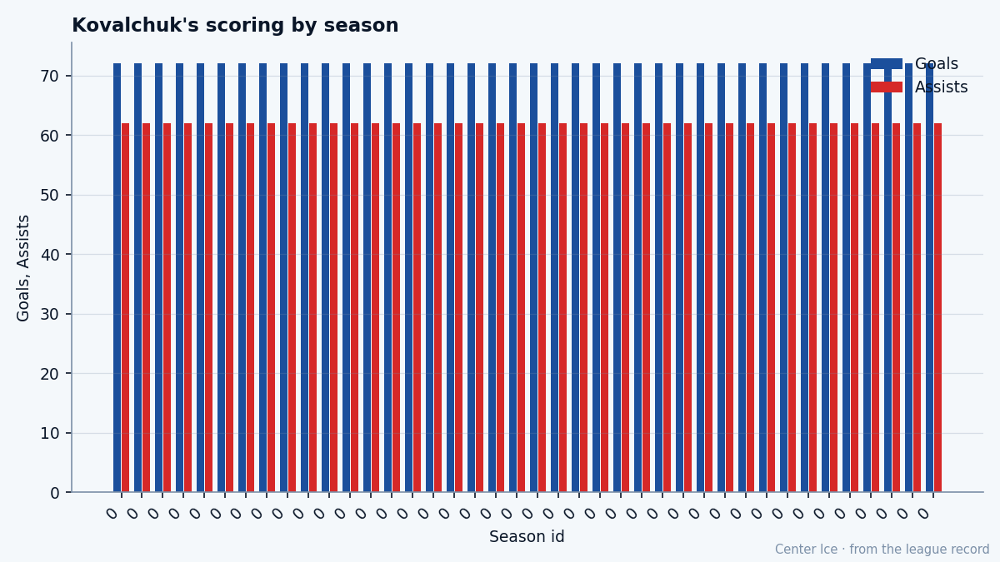

A Trophy on the Shelf: the Lady Byng, the 99 and the $1.10M that won't survive July
Ilya Kovalchuk scored 138 points last season at $7,971 per point, the cheapest among every player who crossed 50, and his contract has 0 years left
 Tomáš VránaProfile writer · The Sweater
Tomáš VránaProfile writer · The SweaterThe piece
 Ilya Kovalchuk92 grew up in Tver, on the Volga between Moscow and St. Petersburg, a city that fed hockey players through
Ilya Kovalchuk92 grew up in Tver, on the Volga between Moscow and St. Petersburg, a city that fed hockey players through  Atlanta Thrashers's future first-overall selection rather than through the more famous Moscow pipelines. He played the 1997 Quebec International Pee-Wee Hockey Tournament with Spartak Moscow, then spent two seasons in the Vysshaya Liga before crossing the ocean at 18. In 2001, he became the first Russian taken first overall in the league's history. He wears 17, a number he chose for Valeri Kharlamov, the Soviet winger whose career defined the 1970s. Kovalchuk is 22 years old. The Book says 91.
Atlanta Thrashers's future first-overall selection rather than through the more famous Moscow pipelines. He played the 1997 Quebec International Pee-Wee Hockey Tournament with Spartak Moscow, then spent two seasons in the Vysshaya Liga before crossing the ocean at 18. In 2001, he became the first Russian taken first overall in the league's history. He wears 17, a number he chose for Valeri Kharlamov, the Soviet winger whose career defined the 1970s. Kovalchuk is 22 years old. The Book says 91.
The grades that carry him: Speed 99, Acceleration 99, Shooting Power 99, Agility 98, Endurance 96, Heroic 99. Six of his 23 displayed attributes sit at 96 or above. The bottom five: Fighting 50, Speed Under Pressure 51, Injury 52, Faceoffs 55, Offensive Awareness 64. The gap between a Speed grade of 99 and a Fighting grade of 50 is the widest on any forward's card the Bureau grades above 85 overall. He won the Lady Byng Trophy last season, the league's award for sportsmanship and gentlemanly conduct. He scored 63 goals and 138 points in 79 games. His penalty minutes for the entire season: 18.
His first full season in the league produced 72 goals, 62 assists, 134 points in 82 games, at 21.7 minutes a night. Last season: 63 goals, 75 assists, 138 points in 79 games, at 20.0 minutes. Nine fewer goals, 13 more assists, 4 more points. The shot stayed the same; the passing got better. He played in the All-Star Game in 2004, his first selection. So far this season: 1 goal, 1 assist, 19.0 minutes in one game, no penalties. The Development Index has him at +5, which puts his overall today at 91 against a base of 89.
His Injury grade reads 52. The record carries one shoulder injury: onset sometime between 2005-03-25 and 2005-03-30, back on 2005-03-30. He missed time late in last season and returned for the final week. The grade suggests the Bureau does not trust the body. At 74 inches and 202 pounds, he is not built to absorb contact, and the 50 on Fighting means he won't put himself where the contact comes. That is a rational choice for a man who scores 63 goals without leaving the end of the bench.

Of the 37 players who scored 50 or more points last season, Kovalchuk's $1.10M divided by 138 points yields $7,971 per point, the lowest figure among them.  Dany Heatley91, his own right wing in Atlanta, is next at $8,396.
Dany Heatley91, his own right wing in Atlanta, is next at $8,396.  Mike Comrie86 is $8,403. The fifth name on the sorted list is $10,185. Kovalchuk and Heatley carry the same deal: $1.10M, 0 years of control left.
Mike Comrie86 is $8,403. The fifth name on the sorted list is $10,185. Kovalchuk and Heatley carry the same deal: $1.10M, 0 years of control left.
 Markus Naslund89 scored 138 points last season, identical to Kovalchuk, and has 1 year of control remaining.
Markus Naslund89 scored 138 points last season, identical to Kovalchuk, and has 1 year of control remaining.  Jarome Iginla92 scored 128 and has 4 years of control left.
Jarome Iginla92 scored 128 and has 4 years of control left.  Jaromir Jagr90 scored 145 and has 5 years left. Kovalchuk matched the Hart Trophy winner's point total and earns the least among every man who scored 100 or more last season. Free agency arrives in 288 days, and the $1.10M cannot survive it.
Jaromir Jagr90 scored 145 and has 5 years left. Kovalchuk matched the Hart Trophy winner's point total and earns the least among every man who scored 100 or more last season. Free agency arrives in 288 days, and the $1.10M cannot survive it.
The room around the 17
Atlanta Thrashers's front end is structured around the assumption that the best player on the roster will never lay a hit and will never take a draw. Heatley sits at 90 overall on the right.  Sami Kapanen82 is 81.
Sami Kapanen82 is 81.  Vyacheslav Kozlov79 is 78.
Vyacheslav Kozlov79 is 78.  Patrik Stefan80 centers at 79.
Patrik Stefan80 centers at 79.  Byron Dafoe85 is 84 in net. Stefan takes the faceoffs because Kovalchuk cannot win them at a rate that matters, and Heatley absorbs the board battle because the 50 fighting grade means he won't start one. The defenseman steps up and moves the puck north so the 99 acceleration turns a clean outlet into an odd-man rush before a check can be laid. You build the structure so those two numbers never have to meet.
Byron Dafoe85 is 84 in net. Stefan takes the faceoffs because Kovalchuk cannot win them at a rate that matters, and Heatley absorbs the board battle because the 50 fighting grade means he won't start one. The defenseman steps up and moves the puck north so the 99 acceleration turns a clean outlet into an odd-man rush before a check can be laid. You build the structure so those two numbers never have to meet.
He plays 19.0 to 20.0 minutes a night. The league's top centers play 25 and 26. The minutes are not the problem. The shift where he gets a single step, on a breakaway or a rush through the neutral zone, is the shift that produces a goal, and the 99 guarantees he gets it more often than anyone else alive. What the men who dress with him would say: a quiet man who arrives early and leaves late because the skating matters to him beyond the game. Morale 90. He likes it here, and the $1.10M says otherwise.
The ceiling the Bureau drew in pencil
The Bureau projected a potential of 86. His base reads 89. With the Index at +5, his overall today says 91. He is 3 grades past his ceiling at the base, 5 past it with the day's form. He scored 134 points as a rookie and 138 last season. The Bureau undersigned him on the projection sheet.
Jarome Iginla is 13 grades past his projection, on a 22-win club in Calgary, 0 years of control left, 76 goals. Kovalchuk is 5 past his, on a team that lost 3-2 in its opener, on a contract that will look different before summer. He is 22. The Lady Byng sits on a shelf. The 17 on his chest is for a man he has never met.
1 goal, 1 assist, 19.0 minutes in 1 game. The season is one night old. The $1.10M has 288 days left on it, and 138 points is about to make that number look embarrassing.